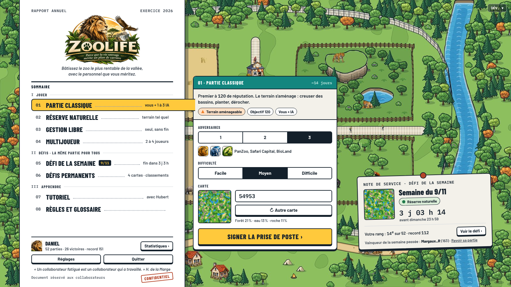
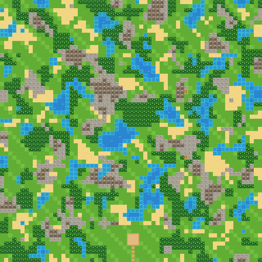
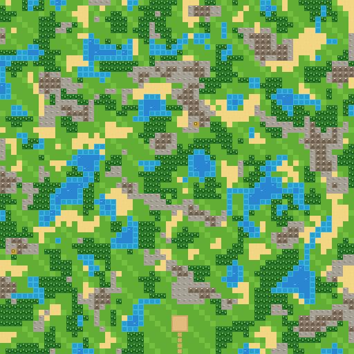
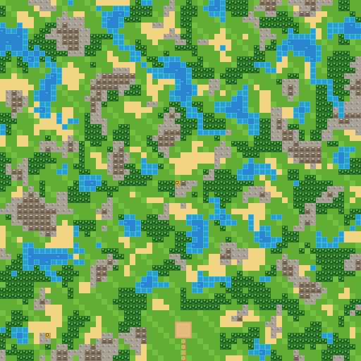

LA MÊME PARTIE POUR TOUS · 10 JOURS · SEUL CONTRE LES 3 MEILLEURES IA
Défis
Même carte, même draft, mêmes collaborateurs et même marché pour tous. Score : votre réputation au soir du jour 10.
×
Défi de la semaine du 9/11nouveau défi lundi 16/11

Réserve naturelle
Carte n° 600024843 · 10 jours · 3 IA en Difficile
SE TERMINE DANS
3 j 03 h 14 min
dimanche 15/11 à 23 h 59
Votre record112
Parties3
Rang
Jouer le défi ›
Semaine du 2/11 · vainqueur : Margaux_R · 163 · Partie classique
▶ Revoir sa partie
Défis permanentstoujours ouverts · un classement chacun

La vallée des Saules
Aménagements
Pas encore joué
ClassementJouer

Le plateau des Roches
Aménagements
Record127
Parties2
Rang
ClassementJouer

Le delta sauvage
Réserve naturelle
Record151
Parties1
Rang
ClassementJouer

Monts et marais
Réserve naturelle
Record96
Parties4
Rang
ClassementJouer
Cote · Défi de la semaine du 9/11…
VOTRE RANG
record 112 · 3 parties
cotation en cours…
1
2
3
4
5
6
7
8
9
10
Les pseudos du top 10 deviennent visibles quand vous y entrez. Les parties sont privées ; seule celle du vainqueur de la semaine passée peut être revue.